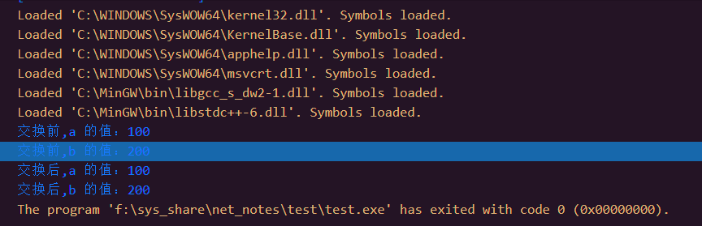

C++引用
引用变量是一个别名，也就是说，它是某个已存在变量的另一个名字。一旦把引用初始化为某个变量，就可以使用该引用名称或变量名称来指向变量。
引用 和 指针 的区别
引用很容易与指针混淆，它们之间有三个主要的不同:
- 不存在空引用。引用必须连接到一块合法的内存
- 一旦引用被初始化为一个对象，在其作用效果结束前就不能被指向到另一个对象。指针可以在任何时候指向到另一个对象。
- 引用必须在创建时被初始化。指针可以在任何时间被初始化。
如何创建引用
试想变量名称是变量附属在内存位置中的标签，您可以把引用当成是变量附属在内存位置中的第二个标签。因此，您可以通过原始变量名称或引用来访问变量的内容。例如:
int x = 1;
int& x_ref = x;
现在, x既可以被自己变量名所调用, 也可以使用x_ref这个引用名称进行调用
引用到底是为了什么
C++ 支持把引用作为参数传给函数，这比传一般的参数更安全。
实例
#include <iostream>
using namespace std;
// 函数声明
void swap(int& x, int& y);
int main ()
{
// 局部变量声明
int a = 100;
int b = 200;
cout << "交换前，a 的值：" << a << endl;
cout << "交换前，b 的值：" << b << endl;
/* 调用函数来交换值 */
swap(a, b);
cout << "交换后，a 的值：" << a << endl;
cout << "交换后，b 的值：" << b << endl;
return 0;
}
// 函数定义
void swap(int& x, int& y)
{
int temp;
temp = x; /* 保存地址 x 的值 */
x = y; /* 把 y 赋值给 x */
y = temp; /* 把 x 赋值给 y */
return;
}
程序结束后, a b的值会被交换, 但为什么不直接去使用变量名进行调用呢?

可以发现a b的值并不能该表
C++之所以增加引用类型， 主要是把它作为函数参数，以扩充函数传递数据的功能。
这就要提到C/C++的三种传参方式了
将变量名作为实参和形参。这时传给形参的是变量的值，传递是
单向的。如果在执行函数期间形参的值发生变化，并不传回给实参。因为在调用函数时，形参和实参不是同一个存储单元c语言特性传递变量的指针。形参是指针变量，实参是一个变量的地址，调用函数时，形参(指针变量)指向实参变量单元。这种通过形参指针可以改变实参的值 c语言特性
C++提供了 传递变量的引用。形参是引用变量，和实参是一个变量，调用函数时，形参(引用变量)指向实参变量单元。这种通过形参引用可以改变实参的值。 C++特有
C++ 把引用作为返回值
通过使用引用来替代指针，会使 C++ 程序更容易阅读和维护。C++ 函数可以返回一个引用，方式与返回一个指针类似。
当函数返回一个引用时，则返回一个指向返回值的隐式指针。这样，函数就可以放在赋值语句的左边。例如，请看下面这个简单的程序:
#include <iostream>
using namespace std;
double vals[] = {10.1, 12.6, 33.1, 24.1, 50.0};
double& setValues(int i) {
double& ref = vals[i];
return ref; // 返回第 i 个元素的引用，ref 是一个引用变量，ref 引用 vals[i]
}
// 要调用上面定义函数的主函数
int main ()
{
cout << "改变前的值" << endl;
for ( int i = 0; i < 5; i++ )
{
cout << "vals[" << i << "] = ";
cout << vals[i] << endl;
}
setValues(1) = 20.23; // 改变第 2 个元素
setValues(3) = 70.8; // 改变第 4 个元素
cout << "改变后的值" << endl;
for ( int i = 0; i < 5; i++ )
{
cout << "vals[" << i << "] = ";
cout << vals[i] << endl;
}
return 0;
}
这样就可以像变量一样去给vals的每一个元素单独赋值了
(就像是给被返回对象取了一个函数别名!)
注意: 当返回一个引用时，要注意被引用的对象不能超出作用域。所以返回一个对局部变量的引用是不合法的，但是，可以返回一个对静态变量的引用
int& func() {
int q;
//! return q; // 在编译时发生错误
static int x;
return x; // 安全，x 在函数作用域外依然是有效的
}